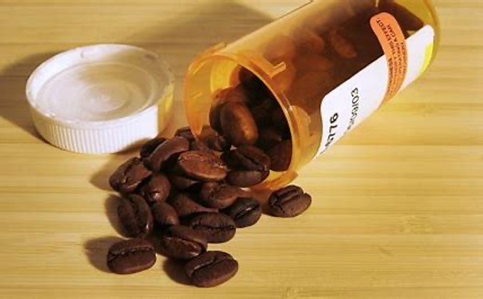

631-555-0123
CrazyCaffine@gamil.com
99 Cafe way, Patchogue, Alaska
Caffeine has addictive properties that may lead to physical dependence. People that regularly consume Caffeine need to make good and responsible choices when it comes to consumption, such as limiting intake to only one or two cups of coffee a day. Caffeine addiction is more likely to occur in someone that’s also suffering from a co-occurring mental health disorder, such as insomnia or an eating disorder , and this can make it harder for the user to stop. If someone that you love has a Caffeine addiction or another complicating disorder, contact a therapist today and learn about potential treatment options.
